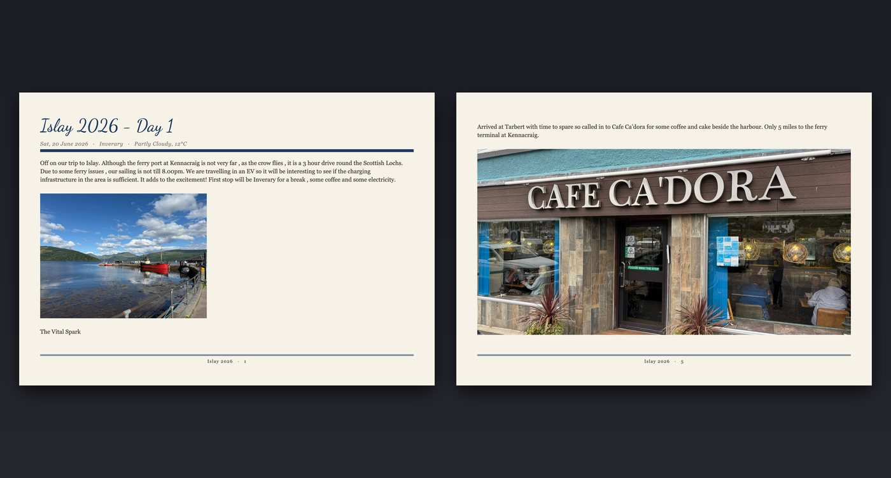
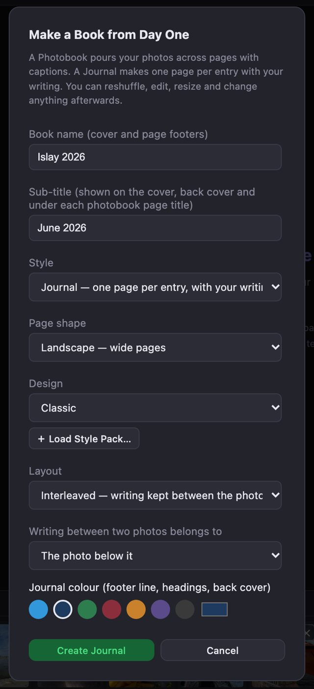
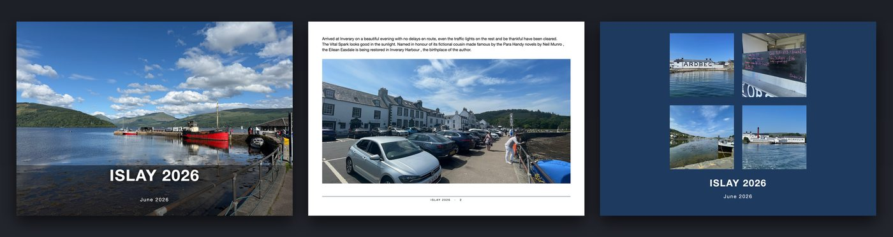
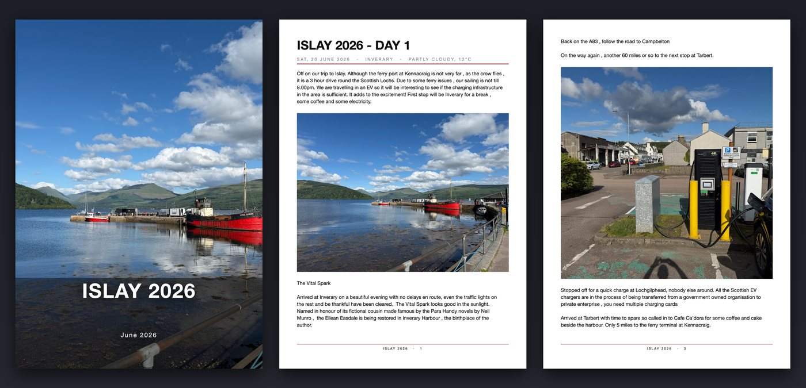
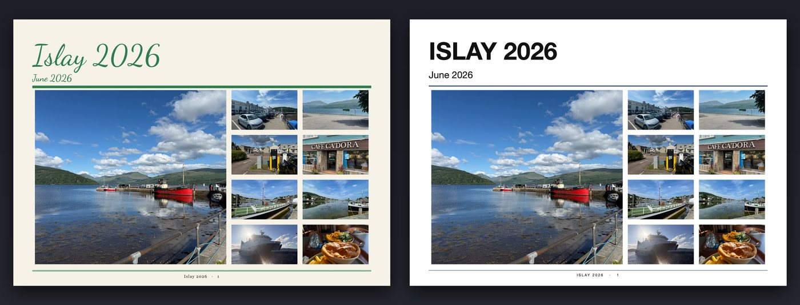
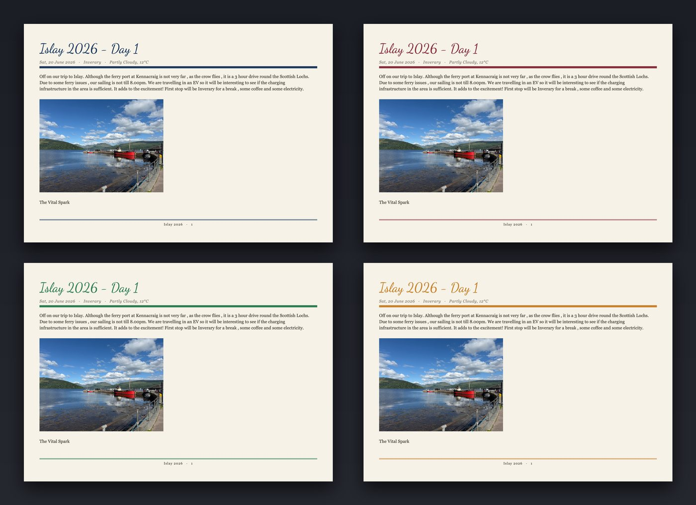

Years of entries, photos and places — as a book you can hold. Export your journal, open it in Mosaic Collage Maker, and it lays out every page for you. Built on your own computer; nothing is uploaded.
Your size · your printer · your paper

One designed page per entry, with its heading, date, place and your writing, and the photos fitted to the page — keeping your writing between the photos where you wrote it. Entries that run on continue across pages.
Your photos poured across pages in fresh mosaic layouts, with their captions. Best when you want a picture-led book and the writing matters less.
In Day One, export the journal as JSON with photos included. You get a single .zip file containing the journal and a photos folder. Keep it as one zip — don't unzip it. (Day One's menu wording differs between versions; its own help shows where the export option is.)
Using Daykeep instead? Export the journal from Daykeep for Mosaic Collage Maker — the same Import button reads it.
In Mosaic Collage Maker click Import from Day One… in the toolbar and choose the zip. A progress panel shows the file being opened, the journal read, and the photos loading, so you can see it is working even with thousands of photos.

When the journal has been read, a window asks how to build the book:
The book is built on screen in moments. Every page is an ordinary page in the app: move or resize a photo, edit or re-caption text, change the design, reshuffle a photobook page.
Export the whole book as a single print-ready PDF (or as JPEGs) and take it to any printer or photobook service. You own the file, so you can reprint it whenever you like. See Page Setup for the page sizes printers ask for.



Day One can print a book for you from the iPhone or iPad app. According to Day One's own guide that means one page size (5.5 × 8.5 inches), paperback or hardcover, one kind of paper, and no way to rearrange photos or change the type. It is convenient — and if that suits you, it is a fine choice. If you want a different size, a particular printer, or a better paper, you need the journal as a file you control.
That is what Mosaic Collage Maker gives you: the finished book as a print-ready PDF (or JPEGs) that you can take to any printer. So these choices are yours:
| Day One's own printed book* | Your journal in Mosaic Collage Maker | |
|---|---|---|
| Page size | One size, 5.5 × 8.5 in | Any size in millimetres at 300 DPI — A3, A4, A5, US Letter, square, or the exact size your printer asks for, saved as a named preset |
| Printer | Day One's print service, ordered in the iOS app | Any photobook service or printer that takes a PDF or JPEGs — high-street, online or local |
| Cover and binding | Paperback or hardcover | Whatever your chosen printer offers: soft cover, hardback, lay-flat, spiral… |
| Paper | One paper choice | Matt, gloss, silk, lay-flat or premium photo paper — your printer's range |
| Layout | Photos and type can't be rearranged in the app | Every page editable: move, resize, re-crop, add text, change the design |
| Copies | Ordered one at a time through the app | You own the file — reprint, give copies, or restyle later |
*As published by Day One at the time of writing; its options may change, so check its own page. Day One's service has one real advantage: you can order from inside the app without handling a file.
Printers rarely use exact paper sizes: an "A3" photobook is often not 420 × 297 mm. Ask your printer for its trim size in millimetres (and whether it wants single pages or a double-page spread), choose Custom in the page size list, and save it as a preset. Choose the shape at import, and export a PDF with the optional 3 mm bleed if your printer asks for it. The help guide lists sizes tried with Photobox, Colorland, Printerpix and Mixbook. Always order one test page or a small book before committing to a large job.
Your whole journal can be one project of hundreds of pages. How many pages a single book can have is up to your printer — most services have a maximum, so for a long journal you can split it, for example one volume per year, each with its own name and colour.
The journal colour you pick is used for the footer line, heading rules and back cover, so one choice changes the whole feel of the book. The design sets the page colour, the title typeface, and whether photos get a frame. Classic and Editorial are included; more come as Style Packs, and one pack works for both journals and photobooks.

The export file is read on your own computer and the book is built there. There is no account, no upload and no tracking. Your journal never leaves your machine. The privacy page has the details.
Yes. Mosaic Collage Maker produces a print-ready PDF (or JPEGs) in any page size you set in millimetres, so you can send it to any printer or photobook service and use their own choices of cover, binding and paper. Day One's own printed books are a single size (5.5 × 8.5 inches), according to Day One's guide.
No. Mosaic Collage Maker reads the export file on your own computer and builds the book there. There is no account and nothing is sent to a server.
Use Day One's export and choose JSON with photos included. You get one zip file containing the journal and a photos folder. Import that zip as it is — do not unzip it. Day One's menu names vary between versions, so check Day One's own help if you can't find the option.
Yes. Daykeep can export a journal for Mosaic Collage Maker, and the same Import button reads it, keeping your writing, captions and photos in order.
No. Only photos and writing come into the book. The import window tells you how many attachments were left out, and an entry that contained only those is skipped.
Journals of several gigabytes and thousands of photos have been imported. A progress bar shows the file being read. Large journals need plenty of memory while the book is built and exported, so close other large apps first.
A line of writing between two photos can describe either. At import choose whether it belongs to the photo above or below. To fix a single page afterwards, select the text box and use Move to page above or Move to page below — the photos make room for it.
Use Resize pages to this size and choose Keep my arrangement. The other option, Re-flow, rebuilds photo mosaics and is not suited to journal pages with writing on them.
On the Mac the app is free to try: everything works, and exports carry a preview watermark until you unlock the full app with a one-off purchase. Customers who bought the app earlier are unlocked automatically. The Windows version is sold as a one-off purchase.